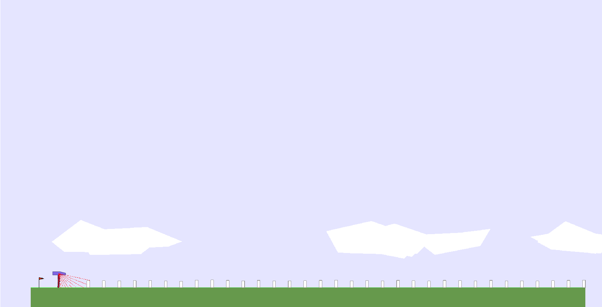

Our Stump Tracks environment is extended from this repository. It features a 2D task space controlling the height and spacing of stumps (height controls the mean of a Gaussian distribution with standard deviation 0.1). Agents are rewarded for moving forward and penalized for torque usage and having their head touching the ground.
Our Parkour environment features a 6D task space controlling a CPPN-encoded terrain as well as creepers (height and spacing) and water level. Reward are calculated the same way as in Stump Tracks except the head contact which is now authorized. Additionally, one can use a smoothing parameter to decrease the roughness of the terrain generated by the CPPN.